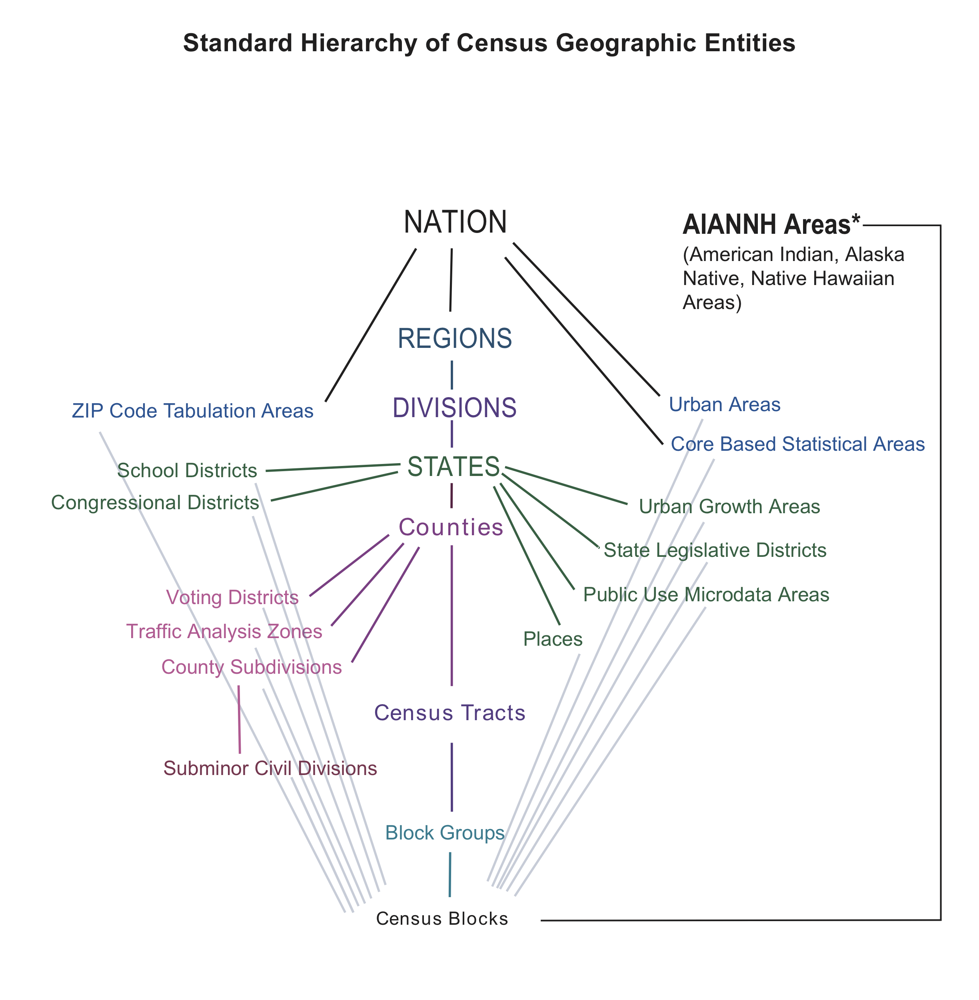

Explain where US Census data come from, and how the decennial census differs from the American Community Survey (ACS).
Describe the Census geographic hierarchy and read a GEOID.
Choose an appropriate geography, survey, and variable for a research question.
Explain what an API is and build a Census API request by hand.
Download Census data with boundaries attached using tidycensus, and map it.
Work responsibly with margins of error, percentages, and comparisons across years.
Most of the spatial data science you will do about people in the United States starts with Census data. Population, income, housing, commuting, education: if a question involves who lives where, the Census Bureau has probably measured it, for small areas, across the whole country, for free.
This chapter has two halves. The first covers what the data are: where they come from, how Census geography is organized, and which variables you will use most. The second covers how to get them: what an API is, how to make a request by hand, and how the tidycensus package turns that request into one line of R that returns a map-ready data frame.
2.1 A brief history of the US Census
Article I of the Constitution requires a count of the population every ten years so that seats in the House of Representatives can be apportioned among the states. The first census, in 1790, was carried out by U.S. marshals on horseback and counted 3.9 million people. The count has run every decade since.
The Census Bureau has repeatedly pushed new technology into being because the job of counting a growing country kept outgrowing the old tools (Table tbl-census-timeline). Herman Hollerith’s punch-card tabulating machines, built for the 1890 census, led to the company that became IBM. A century later, the 1990 census introduced TIGER, one of the first national digital map databases. The boundary files you will download later in this chapter descend directly from it.
Milestones in the history of the US Census.
Year
Milestone
What changed
1790
First census
U.S. marshals count 3.9 million people, as the Constitution requires
1890
Punch cards
Herman Hollerith’s machines speed up tabulation
1902
Permanent bureau
Congress makes the Census Office permanent
1940
Sampling begins
Some questions go to a 5% sample of households
1990
TIGER
Digital street and boundary files for the whole country
2005
ACS launches
A yearly survey replaces the decennial “long form”
2020
Online response
First census answered online; differential privacy added
For our purposes the most important change is the one from 2005. Before then, detailed social and economic questions (income, education, commuting) were asked on a “long form” sent to a sample of households once a decade. Since 2005 those questions have moved to the American Community Survey, which samples households every year. That gives two distinct sources of Census data, and you will choose between them constantly:
The decennial census is a full count of everyone, every ten years. It asks only a few questions (age, sex, race, Hispanic origin, household relationship, housing tenure), but it covers every person.
The American Community Survey (ACS) is a continuous sample survey. It asks many more questions, but every number it publishes is an estimate, with a margin of error (sec-moe).
2.1.1 The moving center of population
Each census, the Bureau calculates the mean center of population: the point where a flat map of the United States would balance if every resident weighed the same. In 1790 it sat in Kent County, Maryland, on the Eastern Shore. By 2020 it had moved about 884 miles, in a straight line, to Wright County, Missouri (Figure fig-pop-center) (U.S. Census Bureau, n.d.).
lower48 <-states(cb =TRUE, resolution ="20m", year =2020) |>filter(!STUSPS %in%c("AK", "HI", "PR")) |>st_transform(5070)# Draw each series as its own path, plus a dashed link between the two 1950 pointspaths <- centers |>group_by(extent) |>summarize(do_union =FALSE) |>st_cast("LINESTRING")link_1950 <- centers |>filter(year ==1950) |>summarize(do_union =FALSE) |>st_cast("LINESTRING")labeled <- centers |>filter(year %in%c(1790, 1850, 1900, 1950, 2020), extent =="Lower 48"| year ==2020)# Zoom to the eastern two-thirds of the country, where the path lieszoom <-st_bbox(st_buffer(centers, 600000))ggplot() +geom_sf(data = lower48, fill ="#f6efe0", color ="#b9ad97", linewidth =0.3) +geom_sf(data = link_1950, color ="#3b5b7a", linetype ="dashed", linewidth =0.5) +geom_sf(data = paths, color ="#3b5b7a", linewidth =0.7) +geom_sf(data = centers, aes(fill = year), shape =21, size =2.6, color ="white", stroke =0.4) +geom_sf_label(data = labeled, aes(label = year), nudge_y =75000,size =3.2, label.size =0, fill =alpha("white", 0.8) ) +scale_fill_gradient(low ="#9fb7cc", high ="#1d3550", name ="Census year") +coord_sf(xlim = zoom[c("xmin", "xmax")], ylim = zoom[c("ymin", "ymax")], expand =FALSE) +theme_void() +theme(legend.position ="bottom", legend.key.width =unit(2, "cm"))
Figure 2.1: Mean center of US population at each census, 1790–2020. Centers through 1950 are for the lower 48 states; from 1950 on they include Alaska and Hawaii, which pulls the 1950 point slightly west and south (dashed link). Source: U.S. Census Bureau, Centers of Population, 1790–2020.
The path tells the story of American settlement. Through the 1800s the center moved almost straight west as settlement pushed across the continent, fastest before 1900. After 1950 it bent southwest as the Sun Belt grew, and it has been in Missouri since 1980.
TipThink about it
Which direction do you expect the center of population to move by 2030? What trends in migration, birth rates, or immigration would push it further west, further south, or back east?
2.2 Census geography
Census data are always published for areas, never for individual people or addresses. Understanding how those areas are defined, and how they fit together, is the first step in using the data well.

Figure 2.2: The standard hierarchy of Census geographic entities. The central spine, from the nation down to blocks, nests completely. The entities branching off it do not. Source: U.S. Census Bureau.
Figure fig-census-hierarchy shows the standard hierarchy. The central spine runs from the nation to regions, divisions, states, counties, census tracts, block groups, and finally blocks. Every unit on the spine nests perfectly: each block lies inside exactly one block group, which lies inside exactly one tract, one county, and one state. That nesting is what makes the spine so useful. You can add blocks up to block groups, block groups to tracts, and so on, and never double-count anyone.
The geographies that branch off the spine, such as ZIP Code Tabulation Areas, places (cities and towns), and congressional districts, are built from blocks too, but they do not nest neatly inside counties or tracts. A ZIP code can cross county lines, and a city can include parts of several tracts. When you have a choice, work on the spine.
The three smallest units on the spine are the ones you will use most for local analysis. Figure fig-orange-geographies shows all three for Orange County, North Carolina.
orange_tracts <-tracts("NC", "Orange", year =2020)orange_bgs <-block_groups("NC", "Orange", year =2020)orange_blocks <-blocks("NC", "Orange", year =2020)geo_levels <-bind_rows( orange_tracts |>transmute(level ="Tracts"), orange_bgs |>transmute(level ="Block groups"), orange_blocks |>transmute(level ="Blocks")) |>mutate(level =fct_inorder(level))ggplot(geo_levels) +geom_sf(fill ="#f6efe0", color ="#3b5b7a", linewidth =0.1) +facet_wrap(~level) +theme_void()
Figure 2.3: Census tracts, block groups, and blocks in Orange County, North Carolina (2020 boundaries). Each level subdivides the one above it.
Census blocks are the smallest unit. A block is often a single city block bounded by streets, but blocks are bounded by any visible feature (railroads, streams, shorelines) and in rural areas can be large. Only the decennial census is published for blocks, and in 2020 block-level data carry the most differential-privacy noise (sec-decennial), so use them with care.
Block groups combine several blocks and usually hold 600 to 3,000 people. They are the smallest geography for which ACS 5-year estimates are published, which makes them the finest level available for most social and economic variables. That detail comes at a cost: block group estimates have large margins of error.
Census tracts combine block groups and typically hold 1,200 to 8,000 people, about 4,000 on average. They are drawn to be fairly similar in population and stable over time, which makes them the workhorse unit for neighborhood analysis. Their boundaries are still revised each decade, though, so comparisons across censuses take care (sec-comparing-years).
2.2.1 FIPS codes and GEOIDs
Every Census area has a unique identifier called a GEOID, built by stringing together FIPS codes (Federal Information Processing Standards codes) for each level of the hierarchy. FIPS codes are standard numeric IDs for states and counties: North Carolina is 37 and Orange County is 135.
Reading a GEOID, using a tract in Orange County, NC. The tract number is illustrative. A block GEOID appends a four-digit block number to the tract GEOID, and the first digit of that block number is the block group.
Part
Example
Digits
GEOID so far
State
37 (North Carolina)
2
37
County
135 (Orange)
3
37135
Tract
011600
6
37135011600 (11 digits)
Block group
2
1
371350116002 (12 digits)
Block
2004
4
371350116002004 (15 digits)
Read Table tbl-geoid from the top down. Because the parts always have the same number of digits, you can recover the state, county, and tract of any block just by slicing its GEOID, for example with str_sub(GEOID, 1, 5) for the county.
WarningKeep GEOIDs as text
GEOIDs look like numbers, but treat them as text. Alabama’s state FIPS code is 01. Read it as a number and it becomes 1, every Alabama GEOID loses a digit, and your joins quietly fail. When you read a CSV, set the column type explicitly, for example read_csv(file, col_types = cols(GEOID = col_character())).
The GEOID is also the key you will join on. Census tables and Census boundary files both carry a GEOID column, so attaching data to shapes is a single left_join() on that field.
2.2.2 What data are available at each level
Not every table is published for every geography. As areas get smaller, the Bureau publishes fewer tables and adds more noise to protect privacy. Table tbl-availability summarizes the 2020 decennial products.
Variables available in the 2020 Census redistricting (PL 94-171) and DHC products, by geographic level.
Geographic level
Redistricting (PL 94-171)
Demographic and Housing Characteristics (DHC)
Notes
Nation, state, county
All basic counts and race/voting-age splits
All (2,400+ variables)
Full data availability
Place, MCD, metro area
All basic counts
Most DHC tables
Standard demographic and housing tables
Census tract
All basic counts
Extensive, including single-year age
Good balance of detail and privacy noise
Block group
All basic counts
Subset of DHC tables
Detailed race and age cross-tabs omitted or generalized
Block
Basic population, race, voting-age, and housing counts
Core counts only (P1, H1, basic tables)
Most affected by differential privacy; detailed cross-tabs absent
2.2.3 ACS 1-year and 5-year estimates
The ACS publishes estimates for different periods (Table tbl-acs-periods). 1-year estimates are the most current but are only published for areas of 65,000 people or more: large counties, cities, and metro areas. 5-year estimates pool 60 months of responses. They are the most reliable and the only ACS product published for tracts and block groups. In tidycensus you choose between them with the survey argument: "acs1" or "acs5" (the default).
ACS period estimates. *The 3-year product was discontinued after the 2011–2013 release. Source: U.S. Census Bureau, American Community Survey.
1-year
1-year supplemental
3-year*
5-year
Collection period
12 months (e.g., 2023)
12 months (e.g., 2023)
36 months (e.g., 2011–2013)
60 months (e.g., 2019–2023)
Areas covered
Populations of 65,000+
Populations of 20,000+
Populations of 20,000+
All areas
Sample size
Smallest
Smallest
Larger than 1-year
Largest
Reliability
Lowest
Lower than 5-year
Middle
Highest
Currency
Most current
Most current
Middle
Least current
Released
Annually since 2005
Annually since 2014
2007–2013
Annually since 2009
A 5-year estimate labeled 2022 describes the whole period 2018–2022, not the year 2022. Keep that in mind when you write about the results.
2.3 Commonly used variables
Census variables have codes rather than names. An ACS code such as B19013_001 has two parts: the table (B19013, median household income) and the line within it (001). Line _001 is usually the table total. In raw API output, ACS codes end in E for the estimate or M for the margin of error (B19013_001E, B19013_001M). tidycensus adds these suffixes for you, so the tables below omit them. Decennial codes look different (P1_001N).
The tables below list the variables that come up most often in student projects. To find others, see sec-load-variables.
Population and race/ethnicity variables.
Variable
Code
Source
Smallest geography
Total population
B01003_001
ACS 5-year
Block group
Total population (full count)
P1_001N
2020 Census (PL)
Block
Race: White, Black, Asian alone
B02001_002, _003, _005
ACS 5-year
Block group
Hispanic or Latino (any race)
B03002_012
ACS 5-year
Block group
Non-Hispanic White alone
B03002_003
ACS 5-year
Block group
Race and Hispanic origin are separate questions in the Census: a person can be Hispanic and of any race. If you add up the race groups in B02001, Hispanic residents are spread across them. When you want mutually exclusive groups that sum to the total (Hispanic, non-Hispanic White, non-Hispanic Black, and so on), use table B03002.
Age and household variables.
Variable
Code
Source
Smallest geography
Median age
B01002_001
ACS 5-year
Block group
Population by sex and age group
B01001_002 to _049
ACS 5-year
Block group
Total households
B11001_001
ACS 5-year
Block group
Average household size
B25010_001
ACS 5-year
Block group
Housing units (full count)
H1_001N
2020 Census (PL)
Block
Table B01001 splits the population by sex and by age group, so many common measures require adding several lines together. The population under 5, for example, is males under 5 (B01001_003) plus females under 5 (B01001_027). You will do exactly this in sec-worked-example.
Income and poverty variables. For poverty at the block group level, sum C17002_002 and _003 (income under 100% of the poverty line). B17001 and B19083 are published for tracts and larger.
Variable
Code
Source
Smallest geography
Median household income
B19013_001
ACS 5-year
Block group
Per capita income
B19301_001
ACS 5-year
Block group
Income below poverty level
C17002_002 + _003
ACS 5-year
Block group
Individuals below poverty level
B17001_002
ACS 5-year
Tract
Gini index of income inequality
B19083_001
ACS 5-year
Tract
WarningMedians don’t add up
You can add counts across areas, but not medians. The median income of two tracts combined is not the sum, or even the average, of their two medians. If you need a median for a larger area, download it for that area directly.
Education, work, and housing variables. “No vehicle” combines owner (_003) and renter (_010) households.
Variable
Code
Source
Smallest geography
Bachelor’s degree, age 25+
B15003_022
ACS 5-year
Block group
Unemployed, civilian labor force
B23025_005
ACS 5-year
Block group
Renter-occupied housing units
B25003_003
ACS 5-year
Block group
Median home value
B25077_001
ACS 5-year
Block group
Median gross rent
B25064_001
ACS 5-year
Block group
No vehicle available
B25044_003 + _010
ACS 5-year
Block group
Most of these are counts. To compare places of different sizes, divide by the right denominator, which is usually the _001 total of the same table: bachelor’s degree holders over the population aged 25 and older (B15003_001), or unemployed people over the civilian labor force (B23025_003). sec-percentages shows how to do this in one step.
TipThink about it
Write down one question about your own community that Census data could help answer. Which variable would you need, at what geography, and from which survey?
2.4 What is an API?
You could get any of the variables above by clicking through data.census.gov and downloading a CSV. For a one-off table that works. For anything you want to repeat, share, or scale up, it is far better to ask for the data from code, through an API.
An API (Application Programming Interface) is a set of rules for how one program asks another for data or services. Your R script is one program; the Census Bureau’s server is the other. Your script sends a request, and the server sends back data (Figure fig-api).
flowchart LR
A["Your code<br/>(R script)"] -- "request" --> B{{"API"}}
B -- "request" --> C["Their server<br/>(Census Bureau)"]
C -- "data" --> B
B -- "data" --> A
Figure 2.4: An API sits between your code and someone else’s server. Your code sends a request in an agreed format, and the server returns data.
A restaurant menu is a useful analogy. The menu lists what you can order and how to ask for it. You never see the kitchen, and you get back exactly what you ordered, as long as you ordered something on the menu.
2.4.1 Web APIs: URLs in, JSON out
Most data APIs on the web follow a style called REST. Three ideas cover almost everything you need:
Every dataset or service has its own web address, called an endpoint. The 2022 ACS 5-year data live at https://api.census.gov/data/2022/acs/acs5.
Requests are ordinary HTTP requests, the same thing your browser sends when it loads a page. A GET request reads data; a POST request sends data. Data APIs mostly use GET.
Responses usually come back as JSON (JavaScript Object Notation), structured text that R can turn into lists or data frames.
2.4.2 Anatomy of a request
A REST request is just a URL with two parts: the endpoint, which says which service to call, and the parameters, which say what you want from it. A ? separates the two, each parameter is written name=value, and an & separates parameters.
Here is a request to Esri’s geocoding service that looks up one address:
Everything before the ? is the endpoint. singleLine is the address to look up (%20 is how a space is written inside a URL), and f=pjson asks for pretty-printed JSON. Paste that URL into a browser and you will see the JSON response.
Here is a Census API request with the same structure. It asks for median household income for every county in North Carolina:
get lists the variables, for picks the geography (county:* means every county), and in limits the request to state 37, North Carolina.
2.4.3 Why use an API?
APIs take a little more setup than a download button. They pay that back in four ways:
Reproducible. Your script is an exact record of what you downloaded, so you, a classmate, or a reviewer can rerun it and get the same data.
Targeted. Parameters return only the variables and places you need.
Current. You pull fresh data each time you run the script, instead of keeping stale files around.
Scalable. One loop can request every state, or every year.
These benefits might not seem like much the first time you download a table. They matter the second time you need the same data, or when someone asks exactly how you got it.
2.5 Calling an API from R
There are two ways to call an API from R: build the request yourself, or use a package that wraps the API for you. It is worth seeing both, because a wrapper package won’t always exist.
2.5.1 Step 0: get and store a key
The Census API asks you to identify yourself with a free key. Request one at https://api.census.gov/data/key_signup.html; it arrives by email within a few minutes. Then store it once:
install = TRUE writes the key to your .Renviron file as CENSUS_API_KEY, so R loads it at the start of every session. Restart R after you run this. From then on, your code reads the key with Sys.getenv("CENSUS_API_KEY").
WarningKeep keys out of your scripts
Never paste an API key directly into a script or Quarto document you might share or push to GitHub. Anyone who has your key can use it as you. Store it in .Renviron, which stays on your computer.
2.5.2 By hand, with httr2
Every manual API call follows the same steps, whatever the service (Table tbl-api-steps).
The steps of a manual API call.
Step
Task
R functions
What happens
0
Get a key
Sys.setenv() or .Renviron
Sign up once; keep the key out of your script
1
Build the request
request(), req_url_query()
Endpoint URL plus parameters
2
Send it
req_perform()
R sends an HTTP GET and waits for the reply
3
Parse the response
resp_body_json()
Turn JSON text into a list or matrix
4
Analyze
dplyr, sf, tmap
Clean, join to geometry, and map
Here are steps 1 to 3 for the North Carolina income request, using httr2:
for and in are reserved words in R, so they need backticks when used as argument names. Look at what comes back: a matrix of text, with the column names in the first row and every value, including income, stored as a string. Step 4 starts with cleaning it:
tidycensus(Walker and Herman, n.d.) does steps 1 through 3, and most of step 4, for you. This single call builds the same URL behind the scenes, sends it, and returns a tidy data frame:
The result has one row per county with GEOID, NAME, variable, estimate, and moe (margin of error) columns. The rest of this chapter uses tidycensus. Similar wrapper packages exist for other services: tigris for Census boundary files and arcpullr for Esri REST services, for example. When there is no package for the API you need, the httr2 pattern above will always work.
2.6 Worked example: mapping young children in North Carolina
This section puts the pieces together. The goal is to map the share of each North Carolina census tract’s population that is under 5 years old.
2.6.1 Find the variables
load_variables() downloads the full list of variables for a dataset and year:
The result has a name column (the code), a label describing the line, a concept naming the table, and the smallest geography it is published for. In RStudio, View(vars_acs5) opens it in a searchable viewer. You can also filter it in code, for example filter(vars_acs5, str_detect(concept, "SEX BY AGE")). cache = TRUE saves the list so it loads instantly next time.
Searching the labels shows that table B01001, Sex by Age, has what we need: the total (_001), males under 5 (_003), and females under 5 (_027).
WarningCheck the concept, not just the label
Many ACS tables come in lettered versions for single race groups. B01001A is Sex by Age (White Alone) and B01001B is Sex by Age (Black or African American Alone). Their lines have the same labels as B01001, so it is easy to grab the wrong one. Always check the concept column.
2.6.2 Download data with geometry
get_acs() with geometry = TRUE downloads the tract boundaries along with the data and joins them on GEOID, so the result is an sf object, ready to map:
Naming the variables (total = "B01001_001") gives the output columns readable names. output = "wide" puts each variable in its own pair of columns: totalE and totalM for the estimate and margin of error, and so on.
2.6.3 Calculate and map
Now add the two under-5 counts, divide by the total, and map the result. moe_sum() and moe_prop() carry the margins of error through the calculation (sec-moe):
A handful of tracts have no value. These are tracts where no one lives, such as national forests, military training areas, or open water, so the percentage would mean dividing by zero. Before you interpret the map, remember that each tract’s value is an estimate. Small tracts can have margins of error nearly as large as the estimate itself, so a single dark tract may reflect sampling noise as much as a real pattern.
NoteTry it
Change the code above to map the share of each county’s population that is 65 or older. You will need several lines of B01001 for each sex. Use load_variables() to find them.
2.7 Going further with tidycensus
The worked example covers the most common case. This section covers what you need to know once you are past your first download.
2.7.1 Margins of error
Every ACS value is an estimate from a sample, and tidycensus returns a margin of error (moe) alongside each estimate. ACS margins of error use a 90% confidence level: there is a 90% chance that the true value lies within estimate ± moe.
The smaller the area, the smaller the sample behind it, and the larger the margin of error relative to the estimate. A useful way to judge reliability is the coefficient of variation (CV): the standard error as a percentage of the estimate. Divide the MOE by 1.645 to get the standard error, then divide by the estimate:
There is no single official cutoff, but a common rule of thumb treats estimates with a CV above about 30% as unreliable: report them with caution, or combine areas or years to get a larger sample (U.S. Census Bureau 2020).
When you combine estimates you must also combine their margins of error, and you can’t just add them. tidycensus provides functions for the standard formulas: moe_sum() for sums, moe_prop() for proportions, moe_ratio() for ratios, and moe_product() for products.
2.7.2 Calculating percentages
Raw counts mostly tell you where people live. A map of the number of renters looks a lot like a map of population. To compare places, convert counts to shares.
The summary_var argument adds a second variable, usually the table total, to every row as summary_est and summary_moe. That puts the numerator and denominator side by side, so the share is a single division:
get_decennial() works like get_acs() but pulls from the full-count decennial census. Because these are counts rather than sample estimates, there is no moe column. For 2020, choose the summary file with sumfile: "pl" for the redistricting counts (available down to blocks) or "dhc" for more detailed age, sex, household, and housing tables.
“Full count” does not mean “exact.” To protect respondents’ privacy, the 2020 census applied differential privacy: carefully calibrated statistical noise added to published tables. The noise is negligible for states and counties but can be substantial for blocks, especially for small population groups. Treat individual block counts with caution, and aggregate blocks where you can.
2.7.4 Comparing across years
Change over time is one of the most interesting things to measure with Census data, and one of the easiest to get wrong. Four traps to watch for:
Boundaries change. Tract and block group boundaries are redrawn every ten years. A GEOID from 2010 and the same GEOID in 2020 may not describe the same place. ACS releases from 2020 on use 2020 boundaries.
5-year periods overlap. The 2017–2021 and 2018–2022 estimates share four years of responses, so differences between them are muted. Compare non-overlapping periods, such as 2013–2017 and 2018–2022.
Dollars are nominal. Income, rent, and home values are reported in dollars of their own period. Adjust for inflation before comparing.
Codes change. Tables and lines are occasionally renumbered or redefined. Check load_variables() for every year you use.
get_acs() returns one year per call. To pull several, loop over the years with purrr and stack the results:
years <-c(2012, 2017, 2022) # non-overlapping 5-year periodsnc_income_years <-map(years, \(y) {get_acs(geography ="county",variables ="B19013_001",state ="NC",year = y ) |>mutate(year = y)}) |>list_rbind()nc_income_years |>filter(NAME =="Orange County, North Carolina")
The 2012, 2017, and 2022 releases cover 2008–2012, 2013–2017, and 2018–2022, so they do not overlap. The income values are still in nominal dollars.
2.7.5 More tidycensus functions
tidycensus can do much more than get_acs() and get_decennial(). Table tbl-more-tidycensus lists some of the most useful extras.
Other tidycensus functions and arguments.
Function or argument
What it returns
Example use
get_estimates()
Annual population estimates and components of change
County population growth since 2020
get_pums()
Individual and household ACS microdata
Custom tabulations not in published tables
get_flows()
County-to-county migration flows
Where people moving into a county came from
table = "B19001"
Every variable in one ACS table
Full household income distribution in one call
survey = "acs1"
1-year ACS estimates
Recent data for large counties and metros
tigris::erase_water()
Geometry with water areas removed
Cleaner maps along coasts and lakes
2.8 Summary
US Census data come from two main sources: the decennial census, a full count every ten years with few questions, and the American Community Survey, a continuous sample with many questions and a margin of error on every estimate.
Census geography nests from the nation down to tracts, block groups, and blocks. Every area has a GEOID built from FIPS codes. Keep GEOIDs as text and join on them.
Smaller areas mean more detail but fewer published tables, more privacy noise, and larger margins of error. ACS 5-year estimates are the only ACS product for tracts and block groups.
An API lets your code request data from a server. A REST request is an endpoint URL plus parameters, and the response is usually JSON.
tidycensus wraps the Census API: get_acs() and get_decennial() return tidy data frames, and geometry = TRUE makes them map-ready.
Convert counts to shares with summary_var, carry margins of error through calculations with the moe_*() functions, and compare across years only with non-overlapping periods, consistent boundaries, and inflation-adjusted dollars.
2.9 Exercises
Reading GEOIDs. The GEOID 370630020271003 identifies a Census block. Which state, county, tract, and block group does it belong to? How many digits does each part have?
Choosing a source. For each question, name the survey (decennial, ACS 1-year, or ACS 5-year) and the smallest geography you could use. (a) How many housing units are in each block in Durham? (b) What was median household income in Wake County last year? (c) What share of residents in each Chapel Hill neighborhood rent their home?
Build a URL. Write by hand the Census API URL that requests total population (B01003_001E) for every county in Virginia (state FIPS 51) from the 2022 ACS 5-year data. Paste it into a browser to check it. Then reproduce the same request with httr2.
Reliability. Download median household income for every block group in Orange County, NC. What share of block groups have a CV above 30%? Repeat for tracts and compare.
A rate map. Map the share of households with no vehicle available for tracts in your home county, or in Mecklenburg County, NC. Use B25044 and include the margin of error of the share.
Change over time. Compare median gross rent (B25064_001) for North Carolina counties in the 2013–2017 and 2018–2022 ACS. Which counties saw the largest increase? Explain why you should adjust for inflation, and what else could make your comparison misleading.
Your own question. Return to the question you wrote down in sec-variables. Download the data you need, make a map, and write one paragraph interpreting it, including what the margins of error tell you about your confidence.
2.10 Further reading
Kyle Walker, the author of tidycensus, has written a free online book, Analyzing US Census Data: Methods, Maps, and Models in R(Walker 2023). It covers everything in this chapter in more depth and is the best next step for any project that uses Census data.
Walker, Kyle, and Matt Herman. n.d. Tidycensus: Load US Census Boundary and Attribute Data as ’Tidyverse’ and ’Sf’-Ready Data Frames. https://walker-data.com/tidycensus.